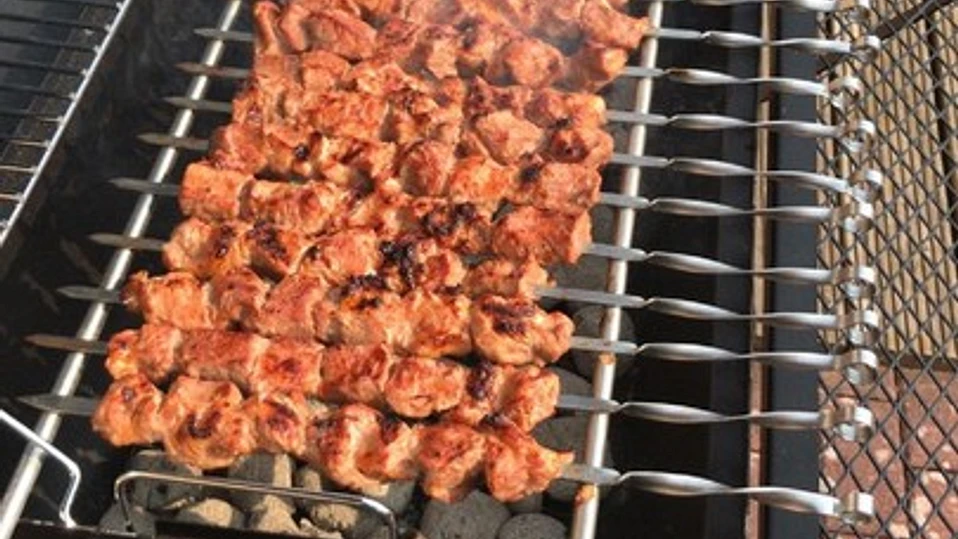

Schaschlik

Beschreibung
Ein leckeres Schaschlik Rezept nach russischer Art
Zutaten für 8 Portionen
- Schweinenacken 2,5kg
- Stückige Tomaten 2,5 Dosen
- Schmand 2,5 Becher
- Zwiebeln 1kg
- Sojasauce 1,5 Flaschen à 150ml
- Kiwi 1
Zubereitung
- Man benötigt zum Einlegen des Fleisches einen großen Behälter!
- Das Fleisch waschen und trocken tupfen. In etwa 4 x 4 cm große Würfel schneiden. Dabei darauf achten, große Fettstücke zu entfernen. Einen gewissen Fettanteil sollte das Fleisch haben, aber wenn so ein Würfel aus 50% Fett besteht, wird es nicht saftig, sondern zu einem Gummiball. Die Würfel alle in den Behälter legen.
- Die Zwiebeln in Ringe schneiden und hinzufügen. Die gehackten Tomaten, Schmand, Sojasauce und Pfeffer hinzufügen und alles gründlich vermengen. Beim Pfeffer nach Geschmack würzen. Ich persönlich rate, lieber zu wenig als zu viel.
- Das Fleisch muss jetzt im besten Fall ca. 24 Stunden in der Marinade ziehen. Zwei Stunden vor dem Grillen die Kiwis in das Fleisch reiben und wieder gut vermengen.
- Das Fleisch auf Schaschlikspieße ziehen, dabei darauf achten, keine Zwiebeln mit aufzuziehen! Ebenso darauf achten, die Stücke nicht zu sehr aneinander zu pressen. Sie sollten sich leicht berühren, mehr nicht.
- Der Grill sollte eine hohe Hitze aufweisen, hier empfehle ich übrigens einen Mangal (wenn man öfter vor hat, Schaschlik zu machen, kommt man nicht drum herum).
- Das Schaschlik braucht in der Regel ca. 30 Minuten. Bei guter Hitze ca. 20 Minuten
Home